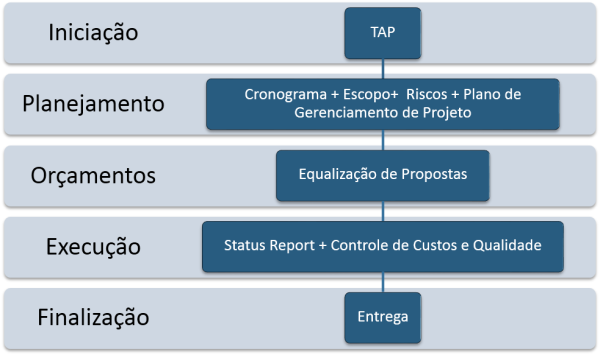
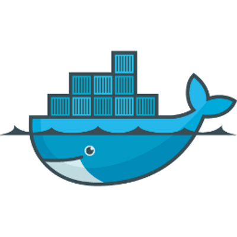

Tecnologia da Informação
Aspectos éticos e Legais da comunicação em sites
A ética na tecnologia é um tema de grande importância atualmente, e se torna ainda mais relevante
quando
se
trata de programação.
Os programadores têm a responsabilidade de criar sistemas que sejam eficientes, seguros e que
correspondam
aos princípios éticos que garantam o bem-estar da sociedade.
Uma delas é a preocupação com a privacidade dos
usuários.
Ao desenvolver um sistema, é importante garantir que as informações pessoais dos usuários estejam
protegidas, evitando que esses dados sejam utilizados indevidamente ou que sejam vazados.
Uma forma de garantir a privacidade dos usuários é através da criptografia de dados.
São inúmeras as leis que visam proteger a dignidade humana, inclusive virtualmente, e um belo
exemplo é
o
Marco Civil da Internet (Lei n. 12.965/2014), que garante o sigilo de dados pessoais, a privacidade
de
mensagens, as responsabilidades sobre o conteúdo e a neutralidade da rede.
Função e utilidades gestão de projetos
Consiste em definir o rumo da organização,ou seja, o que se pretende atingir (missão e
objetivos) e
o
que
fazer para tal (estratégia).
Para tal é necessário conhecer o ambiente (ou meio envolvente) e a própria organização, seus
recursos e
cultura.

Git e GitHub
O Git> é um Sistema de Controle de Versão (VCS) distribuído, o que significa que é
uma
ferramenta útil
para
rastrear facilmente alterações em seu código, colaborar e compartilhar. Com o Git, você pode
rastrear as
alterações feitas em seu projeto para que sempre tenha um registro do que trabalhou e possa
reverter
facilmente
para uma versão mais antiga, se necessário. Também facilita o trabalho com outras pessoas -
grupos
de pessoas
podem trabalhar juntos no mesmo projeto e mesclar suas alterações em uma fonte final!
GitHub é uma plataforma de hospedagem de código-fonte e arquivos com controle de
versão
usando o Git.
Ele permite que programadores, utilitários ou qualquer usuário cadastrado na plataforma
contribuam
em projetos
privados e/ou Open Source de qualquer lugar do mundo.

Função do Docker
A tecnologia Docker oferece mais do que a habilidade de executar containers: ela também
facilita
o
processo de
criação e construção de containers, o envio e o controle de versão de imagens, entre outros.
Os
containers Linux
tradicionais usam um sistema init capaz de gerenciar vários processos.
